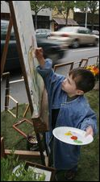

Grass covers concrete in a day to relish a green city
Last updated September 19, 2008 10:57 p.m. PT
By KERY MURAKAMI
P-I REPORTER
More of those A-framed "No Parking" signs went up around Seattle on Friday.
But the drivers going by didn't glare, just looked on curiously because the signs, such as the ones near the Seattle Art Museum, weren't accompanied by the usual dump trucks.
Instead, "Hammering Man" hammered peacefully by a patch of grass rolled out across two street parking spots, and partly onto the curb, as if, for once, green was spreading, overtaking the concrete.
Cars usually parked with stickers in the window were replaced by chairs with signs like "take a load off" set up in the makeshift park -- one of 31 that took over parking spots on streets around the city.
Four easels were set up on the grass.
Barb Taylor, at the end of a long week working for the suddenly for-sale Washington Mutual, decided to stop by shortly before noon.
Taylor took paint to canvas, and in the moments it took for the lights to change a few times, a fence and trees grew.
"It is taking away from work," she told Nate Herth, a museum educator at SAM who was manning the easels.
Similarly, as part of national PARK(ing) Day, community groups and individual artists across Seattle laid out strips of grass, set out lawn chairs, listened to stories and painted pictures, grateful for a little more green in a city of growing forests of concrete.
The idea of transforming space meant for cars into parks began in San Francisco, by the art collective Rebar in 2005, to re-examine space taken up by parking spots. Last year, the national conservation organization The Trust for Public Land began organizing the events around the country.
In Seattle, the trust, working with the pedestrian advocacy group Feet First and the Seattle Parks Foundation, which raises private money for city parks, organized 31 parks, up from four last year.
By the Vivace coffee stand on Capitol Hill's Broadway, a small patch of grass was tucked between a green Honda Accord and a gray Subaru Impreza, as if the park had been parallel parked.
"The parks in Seattle are getting smaller every day," one man observed.
Community activists Charlotte LeFevre and Jennifer Power, though, were using the event to raise money for benches and furniture at a park the city is building nearby at Summit Avenue East and East John Street. So Powers brought all her potted plants and a potted tree from her deck to give her park some vegetation and draw more people.
|  | ||
| Paul Joseph Brown / P-I | ||
| Coling Pfister, 4, takes his turn painting at an easel set up in a parking space along Rainier Avenue South on Friday. | ||
Later, on Rainier Avenue South, between South Findlay and Orcas streets in Hillman City, Marin Bjork and others from the neighborhood had the idea of a park that would change during the day.
In the morning, Bjork said, there'd only been a small patch of grass and a couple of deck chairs. But then someone brought an old rocking horse that by early afternoon was sitting on the grass. Diana Vergis Vinh hung long strings of hops vines from her yard on a rope between the park and the street.
Some cars slowed with curiosity, Bjork said. But at least for a day, drivers didn't seem to mind losing a few spots.
The trust paid for city street permits, and each group paid about $18 a space.
Erin Langner, an education coordinator at SAM who organized the park by the museum, said, "Somebody driving by stopped. I thought they were going to say something about us taking up the parking spot.
"But he reached us and handed us money, and said, 'Let me help pay for the meter.' "
Around the corner, at First Avenue near University Street, cars rushed by Amanda Mae, Corrie Arnold and Joanna Lepore as they sat at a beach, wearing typical Northwest beach wear -- hoodies and jeans.
Driftwood was piled at one end of the two parking spots the beach occupied. At the other end, small plastic red fish floated in a pool of water.
But nobody was stepping off the sidewalk onto their beach, Lepore lamented.
All are artists, and Mae said they'd made parks on their own before by paying at the kiosk and putting the parking sticker on the curb.
Another time, Mae said, drivers stared at the Zen garden of pebbles Mae made in a parking spot at Second Avenue and Yesler Way.
"I could see their brows start to furrow like they were upset we were taking their space on the street," Mae said.
"But then it was like they'd take a deep breath, like they'd found a bit of Zen.
"And I just think this looks so much better than if a Hummer were parked here."
P-I reporter Kery Murakami can be reached at 206-448-8131 or kerymurakami@seattlepi.com.
© 1998-2009 Seattle Post-Intelligencer